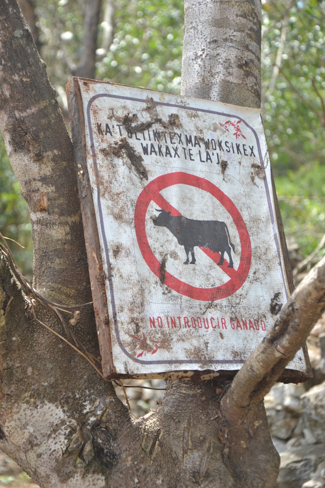
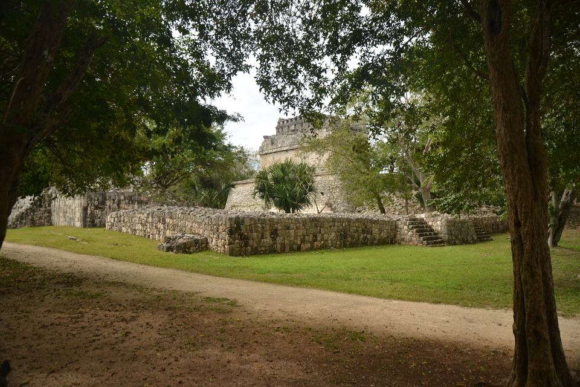
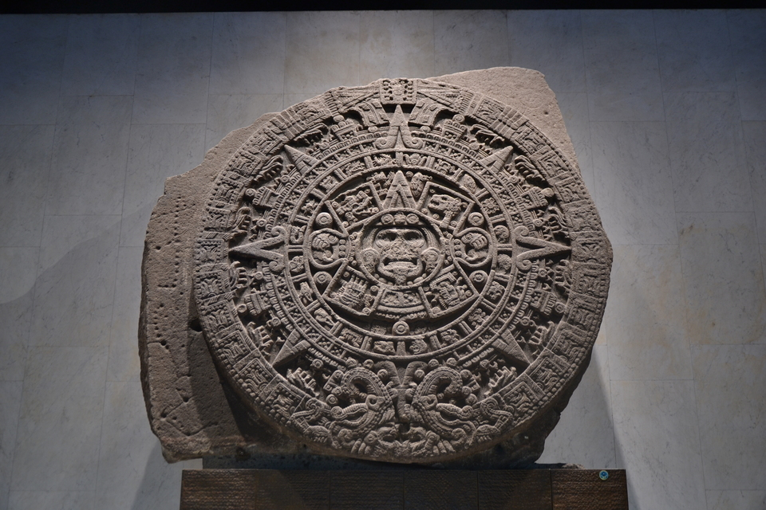
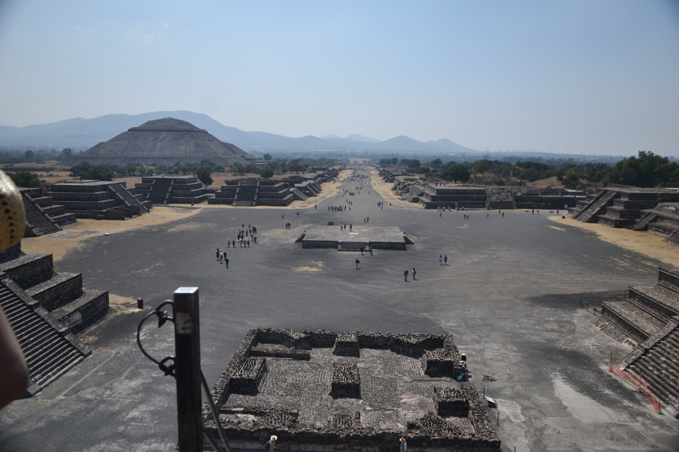

LE MEXIQUE
Eloigné de près de 9200km de la France, ce pays est considéré comme
l'un des pays les plus dangereux
agréable a visiter.
Je suis arrivé dans la premiere ville aprés un an de préparation (oui, un an! Mais quatre mois de voyage a l'autre bout du monde ne ce prépare pas en deux jours)
voici la liste d'une partie des principales villes que j'ai visité:
-
Valladolid
Première Cenote et premier gros kiff
 -
Chichen Itza
Mon tout premier site archéologique, une pure merveille
 -
Mexico city
Plus connue sous le patronyme D.F (à prononcer dè.fè) elle est la capitale de ce pays

-
Le Musée anthropologique
Le plus grand musée anthropologique du monde, il m'a fallut 2 jours pour le visiter
 -
Téotihuacan
Mon second site archéologique sur les civilisation amérindienne
 -
San josé del Pacifico
Un petit village perché a plus de 3000m d'altitude, Un veritable bol d'air pur.

-
Mazunté / Zippolite
Ces deux petite villes côtiere ne sont séparées que par une petite colline et dix minutes de marche

Je vais m'aretter là pour le moment car il y a bien des millions de chosesa raconter sur ce voyage